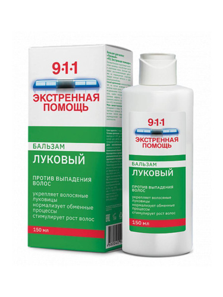
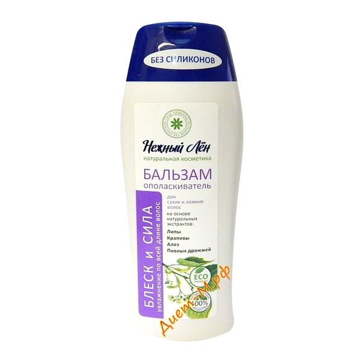

Аромагель Ванильная мята

Аромагель “Восточная пряность”
Дистиллированная вода, динатрия кокоамфоацетат, динатрия кокоил глутамат, кокамидопропилбетаин, коко глюкозид, экстракт календулы, экстракт облепихи,
эфирное масло жасмина, эфирное масло корицы, эфирное масло ванили, эфирное масло гвоздики, эфирное масло пачули, цитрат натрия, дегидроацетат натрия, пропандиол, экстракт коры ивы.

Балансирующая сыворотка Nutrition & Balance

Бальзам для губ “Брусника и мед”

Бальзам для губ “Облепиха и Апельсин”

Бальзам укрепляющий для волосяных луковиц

Бальзам-ополаскиватель Нежный лен “Блеск и сила”
